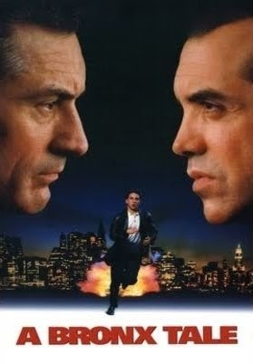

the bronx tale
about the movie
"A Bronx Tale" არის 1993 წლის ფილმი, რომელიც დაწერა და გადაიღო რობერტ დე ნირომ. ფილმის სცენარი ეფუძნება ჩიშ ალბრანოს ერთერთ ისტორიას.
ფილმი მოთხრობს ლიტლიტა (ცუდი ბიჭი) სახელით ცნობილი ბიჭის ისტორიის შესახებ, რომელიც იზრდება ნიუ-იორკის ბრონქსში 1960-იანი წლების ბოლოს. მისი მამა, კობი (რომელიც სიუჟეტის მთავარი გმირია), მცხოვრები ჩვეულებრივი მუშების ოჯახში, ცდილობს თავის ვაჟს ასწავლოს სულიერი ცხოვრების, მართვის და ქცევის ნორმები. თუმცა, ბიჭი ადვილად გაეცნობა ადგილობრივ მაფიის წევრებს, განსაკუთრებით ლოკალური დამნაშავე, სანი. ფილმი განიხილავს სხვადასხვა თემებს, როგორებიცაა ოჯახური სირთულეები, კეთილშობილება და ზღვარი კარგსა და ცუდს შორის. "A Bronx Tale" ერთგვარი მორალური დილემაა, რომელიც ახალგაზრდული სიყბლებისა და ღირებულებების შეჯახების შესახებ საუბარია.

- მთავარი პერსონაჟები:
- კობი - ბიჭის მამა, რომელიც უარს ამბობს ნაძირალა ცხოვრების სტილის მიღებაზე.
- სანი - ადგილობრივი მაფიის წევრი, რომელიც ცდილობს ბიჭის ცხოვრებაში დიდ გავლენას მოახდინოს.
- ბიჭი - ფილმის მთავარი გმირი, რომელიც უყურებს ამ ორი მამაკაცის გავლენას და ცდილობს იპოვოს თავისი ადგილი სამყაროში. ამ ფილმის გამორჩეული მხარეები მისი ადამიანური სიღრმე და სოციალური რეალისტური პერსპექტივაა, რაც მას პოპულარული და კარგად შეფასებული ფილმი გახადა.